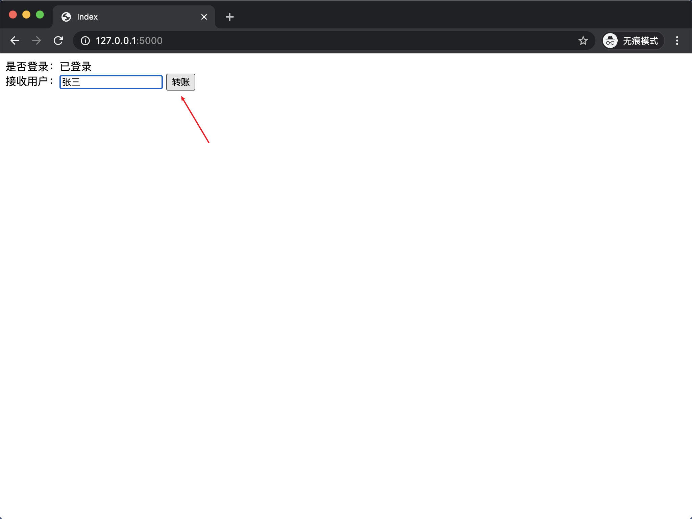
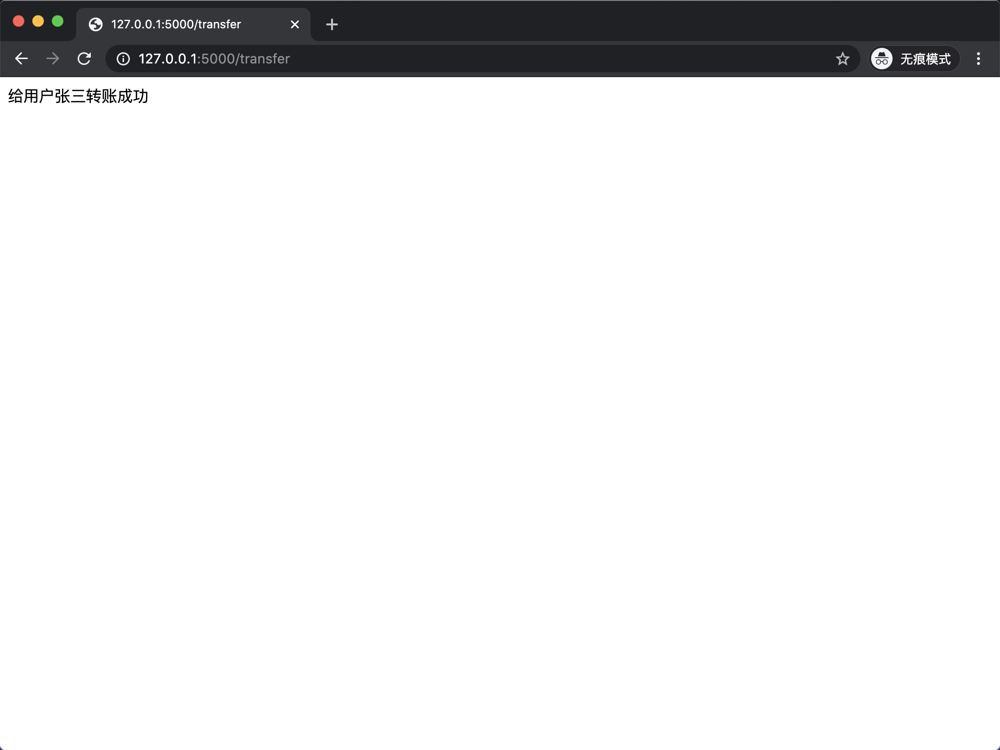
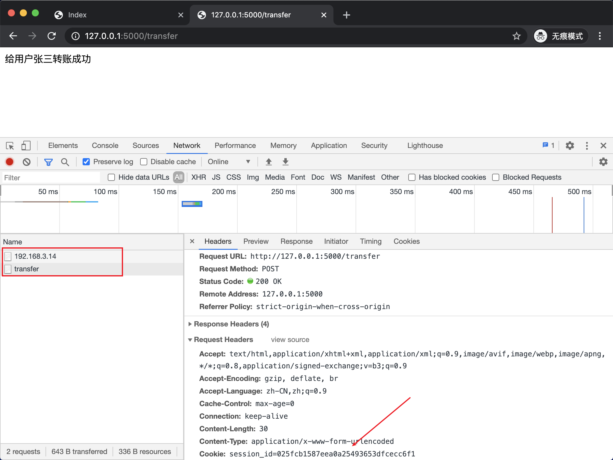

CSRF 攻击中文为跨站请求伪造，全拼为 Cross-site request forgery，也常被称为 XSRF 攻击。虽然 CSRF 攻击没有 XSS 攻击更常见，但其破坏性同样不容小觑。
攻击原理
CSRF 攻击是攻击者利用目标网站对用户浏览器的信任，对已登录用户执行非用户本意的操作。
比如用户登录了 A 网站，记录用户登录的会话信息就会以 Cookie 的形式保存在浏览器中，此时用户访问攻击者提供的 B 网站，B 网站就可以在用户不知情的情况下，伪造一个请求发送给 A 网站的服务器，浏览器会自动在这个请求中携带 Cookie，A 网站的服务器收到这个请求，以为这个请求是 A 网站已登录的用户自己发送过来的，于是执行相应的操作（如发邮件、转账等），就此实现攻击。
攻击示例
这里我用 Flask 编写两个简单的 Web 应用来作为 CSRF 攻击的示例。执行以下代码之前你需要使用 pip install flask 的方式安装 Flask。
首先编写一个带有转账功能的 Web 应用，代码如下：
1 | # demo/app.py |
1 | <!-- demo/templates/index.html --> |
这个 Web 应用中包含了三个视图函数，分别为首页、登录和转账，程序监听 5000 端口。
应用逻辑比较简单，index 视图函数通过判断请求中是否存在键为 session_id 的 Cookie 信息来确认用户是否登录。login 视图函数用来进行登录操作，其实就是给用户浏览器设置一个键为 session_id 的 Cookie 信息，登录成功后重定向到首页。transfer 视图函数用来实现转账功能，只接受 POST 请求，判断用户是否登录的逻辑与 index 视图函数相同，已登录返回转账成功信息，未登录则返回 用户未登录。
应用只包含了一个 index.html 页面，登录后即可通过 form 表单的形式进行转账操作。
虽然这个 Web 应用看起来比较傻，但足以演示 CSRF 攻击过程。启动 Flask 应用，使用浏览器访问 http://127.0.0.1:5000/ 即可看到首页内容。
此时在接收用户的输入框中输入 张三，点击 转账 按钮，会提示 用户未登录。
那么我们可以先访问 http://127.0.0.1:5000/login 进行登录操作。
登录成功后，再次进行转账操作即可成功。
 接下来站在攻击者的角度，编写一个能够对这个转账应用进行攻击的 Web 应用，代码如下：
1 | # demo_csrf/app.py |
1 | <!-- demo_csrf/templates/index.html --> |
这个 Web 应用中只包含一个首页视图函数，程序监听 5001 端口。
在 index.html 页面中，有一句 Hello World! 和一个 form 表单。由于 form 表单中的 input 输入框带有 hidden 属性，所以不会显示在页面中。页面中还有一个 <script> 标签，包含一句 JavaScript 代码 document.forms[0].submit();，其作用是提交 form 表单。
启动这个具有攻击效果的 Flask 应用，在刚刚已经成功登录到 http://127.0.0.1:5000/ 的浏览器中访问 http://192.168.3.14:5001/（为了模拟不同域名，所以这里使用了内网 IP，如果你想在自己的电脑上运行程序则需要改为自己电脑的内网 IP）。
页面显示的内容一瞬间就从 Hello World! 变成了 给用户张三转账成功，此时攻击已经完成。
打开浏览器的开发者工具查看请求过程，可以发现浏览器共发送了两个请求。
第一个请求即为在浏览器地址栏中访问 http://192.168.3.14:5001/，第二个请求则是通过 JavaScript 代码自动提交的 form 表单请求 http://127.0.0.1:5000/transfer，并且浏览器自动携带了 Cookie 信息。
总结一下攻击流程：
- 用户访问目标网站
http://127.0.0.1:5000/并进行登录。 - 用户访问攻击者网站
http://192.168.3.14:5001/。 - 攻击者网站
http://192.168.3.14:5001/通过JavaScript代码向http://127.0.0.1:5000/transfer发送转账请求，此时浏览器会自动携带http://127.0.0.1:5000/下的Cookie信息。 http://127.0.0.1:5000/网站的后台服务器接收到攻击者发送过来的请求，通过Cookie信息验证用户身份通过，完成转账操作。
当然在现实场景，用户不会主动去访问攻击者提供的网站。但攻击者会想尽各种办法诱导用户去访问。比如攻击者在给目标网站的留言中携带网站链接、在给用户发送的邮件中携带链接等。
CSRF 攻击不止这一种方式，还可以通过 a标签的 href 属性、img 标签的 src 属性等。
防范方法
CSRF 攻击的本质是在攻击者网站发送的跨站请求中，浏览器自动携带了 Cookie 信息，而浏览器和网站服务器不具备验证这个请求是否为用户自愿发起的请求的能力。
所以防范方法就是在访问敏感数据请求时，要求用户浏览器提供不保存在 Cookie 中的，并且攻击者无法伪造的数据作为校验，这样 CSRF 攻击就无法完成。
根据以上分析修改这个带有转账功能的 Web 应用，代码如下：
1 | # demo/app.py |
1 | <!-- demo/templates/index.html --> |
在 Flask 应用启动时，生成一个随机的 csrftoken 用来校验请求发起方。当用户访问首页，这个 csrftoken 会被传递到 index.html 中，并且作为 form 表单中一个 input 标签的 value 值。为了不影响页面原有数据展示，将这个 input 标签隐藏了起来（带有 hidden 属性）。当提交 form 表单时 csrftoken 会随表单数据一同被提交。在 transfer 视图函数中从表单数据获取 csrftoken 值，对比内存中已有的 csrftoken 值，如果两者相同则说明该请求是用户发起的，如果两者不同则说明请求是攻击者伪造的跨站请求。因为攻击者无法在自己的网站中构造出这个 csrftoken 值，所以攻击者网站提交的 form 表单数据中无法携带有效的 csrftoken，这样就能够有效的防范 CSRF 攻击。
现在再次尝试访问 http://192.168.3.14:5001/，攻击将无法完成。
可以看到，即使用户已经登录了，但 csrftoken 校验失败，依然无法转账成功。
虽然我们的 Web 应用有效的防范了 CSRF 攻击，但这个实现并不完美。在生产环境的项目中，我们还需要考虑 csrftoken 的时效性，使其在一定时间内过期，并且使用过一次的 csrftoken 也要做失效处理。不过别担心，这些功能早有人帮我们实现了。在 Flask 项目中我们可以通过第三方扩展来实现，如 Flask-WTF 内置的 CSRFProtect。Django 框架甚至默认集成了此功能。
实际上还有很多其他方法可以用来防范 CSRF 攻击，如同源检测，服务端检查 HTTP 请求头中的 Origin 和 Referer 字段，再比如使用 Cookie 的 SameSite 属性来限制第三方 Cookie。
每种防范机制都有各自的优缺点，使用哪种机制应该结合 Web 应用程序情况综合考量，一般来说我们这里举例用的 csrftoken 机制是比较通用的做法。
此外，我们还需要注意程序中的 XSS 漏洞。如果网站中存在 XSS 漏洞，攻击者同样可以通过 XSS 攻击的方式先拿到 csrftoken，然后再进行 CSRF 攻击。
当然，所谓安全都是相对的，并没有绝对的安全，对敏感数据的操作，多加一层校验，虽然看似麻烦，但总好过亡羊补牢。